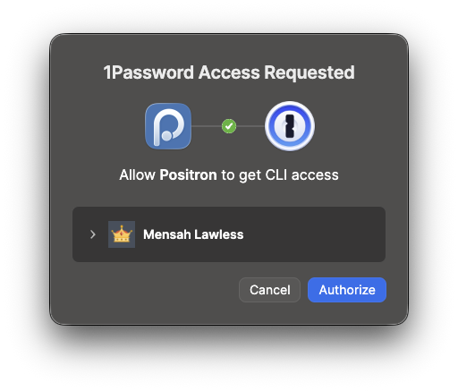

system2(
"op",
args = c("read", shQuote(Sys.getenv("ANTHROPIC_API_KEY"))),
stdout = TRUE
)
# Note, our call to Sys.getenv() needs to be quoted using shQuote() to mitigate issues with spaces and special charactersUsing 1Password Secret References in R
If you’re like me, you’ve stored your API keys in your .Renviron file and forget about them. Not only is it risky to store them in plaintext, it’s also a nightmarish way to manage and rotate out keys when needed.
1Password to the rescue
1Password offers a great solution for managing sensitive data. It even has a dedicated API Credentials item type for people super into taxonomy. The desktop and mobile apps are great for day-to-day internet usage but the real magic happens when you introduce yourself to 1Password CLI and its handy secret references feature.
I won’t go into detail on installation and configuration, the documentation does a better job than I ever could. However, once you have added an API key to 1Password, you can refer to it using its URI (also called a Secret Reference) instead of including it as plaintext in your .Renviron or R script. The URI of a credential comes in this format:
op://<vault-name>/<item-name>/[section-name/]<field-name>For example, an Anthropic API key saved as an item named “ClaudeAPI” inside our “Private” vault with the value in a field called “credential” can be referred to using the URI op://Private/ClaudeAPI/credential (note, the [section-name/] element is only required if the field is under a named section within the item). The URI of your credential can then replace the plain text key in your .Renviron or anywhere else it was lurking. Using our ClaudeAPI example, the entry in .Renviron would look like:
ANTHROPIC_API_KEY="op://Private/ClaudeAPI/credential"Out of 1Password, into R
Our key is now stored inside our 1Password vault, safe from prying eyes and accidental exposure. In our less secure days, we would typically run {r} Sys.getenv("ANTHROPIC_API_KEY") to access the value of the environment variable in a script. While this still works, any API call that uses this value will likely fail as the value returned is the literal URI string, not the secret.
To address this, we need to alter the code in two ways. The first is to use one of the methods 1Password CLI provides for loading secrets into code, the one we will use in our R script is op read. This simply allows us to read the secret into our environment.
The second change, calling the function {r} system2() from {base}, lets us run op read (indeed, any system command) from our R script and returns the actual API key.
When we execute the example code, 1Password will prompt us to approve access to the secret (illustrated in Figure 1). Once we click “Authorize”, the secret value is returned as a character vector (setting stdout = TRUE in system2() makes this happen).

We can alter the above code to assign a name to the returned character vector or we can run the function call directly within the API call function. Furthermore, we can jettison Sys.getenv() entirely and pass the URI directly, like so:
system2(
"op",
args = c("read", shQuote("op://Private/ClaudeAPI/credential")),
stdout = TRUE
)Doing this potentially comes with extra work if you choose to change the name of the item in 1Password but this alternative is there as an option, especially if you’re playing around with your code and are not yet ready to commit to setting an environment variable.
Final thoughts
Admittedly, this does add some extra steps to workflows (not to mention some unsightly code), however, this trade-off is worth it for the privacy and security benefits it offers. Moreover, the increased cognitive load of switching out expired keys is abated somewhat as we can update secrets in a single place, a 1Password vault, without touching our R scripts or environment. This is especially helpful if you use these secrets across multiple contexts.